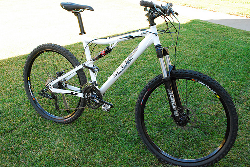

THE MOUNTAIN SPOKE - Everything Bicycles!THE MOUNTAIN SPOKE - Everything Bicycles!
THE MOUNTAIN SPOKE - Everything Bicycles!THE MOUNTAIN SPOKE - Everything Bicycles!Cycling can be fun when you ride on the right bicycle. Knowing the type of bicycle to use at which point is very essential. That's why we at Mountain Spoke don't only sell bicycles but also advice you on which bicycle would suit the purpose you have in mind, which possibly would be mountain biking.
Check out these pictures below with their specifications and do pass by for an excellent customer service beacuse guess what?, we have them in stock and at discount prices.
Specs: Frame Aluminum 7005 Size(s) Small (16.5″/42cm)/Medium (18.5″/47cm)/Large (20.5″/52cm) Fork Rock Shox Tora 302 Air (4.72″/120mm) w/PopLoc Rear Shock Rock Shox Monarch 2.1 (4″/101mm) Shifters SRAM X7, 9-Speed Trigger Front Derailleur SRAM X7, Low Clamp, Blk, 34.9 Top Pull Rear Derailleur SRAM X7 Black Long Cage Shifter Cable/Housing Jagwire Slick Brake Levers Avid Juicy 3 Front Brake Avid 160mm Rotor Rear Brake Avid 160mm Rotor Hoses Avid Hydraulic Hose Crankset Truvativ Firex 3.3, 175mm, Black, 44/32/22T Bottom Bracket Truvativ Giga Pipe XR, 73mm English Cassette SRAM PG-970, 11-34 Chain SRAM PC-971 Headset FSA 1-1/8″ Standard – Black Handlebar Lightweight Alloy Riser Bar- Black Grips Durable Ergo Grips – Black Stem Lightweight Alloy – Black Saddle High Performance Saddle – Black Seatpost Lightweight 6061 Alloy – Black, 31.6 x 350mm Rims Mavic XM719 32H Black, Presta Valve Front Hub Shimano XT M756, 6-bolt Disc Brake, 32H black, QR Rear Hub Shimano XT M756, 6-bolt Disc Brake, 32H black, QR Spokes 14/15 Gauge Double-Butted, Stainless Steel, Black Pedals Shimano PD-505, Silver Front Tire Kenda Krusher 26″ x 2.1, 60 TPI Rear Tire Kenda Krusher 26″ x 2.1, 60 TPI Color(s) White Warranty 5 Years Weight 29.8lbs/13.5kg (w/Pedals, Medium Size Avg.)
The Sette Ace is the perfect bike for guys or gals who have been riding a hard tail and want to step into the Full Suspension XC bike without breaking the bank. You really can’t go wrong with the Sette Ace, low price ($999), great parts, light enough to race with and the white frame is simply HOT!

Specs:Frame: Rocky Mountain 6061 SL Series Custom Hydroformed Alloy. 100mm BB. 12x197mm Axle. Zero Stack Tapered Headtube. Internal Cable Routing. Reverb Stealth Compatible Sizes: S - M - L - XL Fork: RockShox Bluto RL. 120mm. Motion Control DNA Lockout / Rebound / 15x 150mm Maxle Lite / Tapered Steerer Handlebar: Race Face Flat Wide 31.8mm x 710mm x 9° Sweep Grips: Rocky Mountain XC Lock On Brakes: Shimano SLX Hydraulic Disc 180/160mm Brake Levers: Shimano SLX I-Spec Shifter Mount Shifters: Shimano SLX Rapid Fire I- Spec 1x10spd Rear Derailleur: Shimano XT Shadow Plus 10spd Cranks & Chainrings: Race Face Aeffect Cinch 170-175mm Narrow-Wide 24T Direct Mount 1x10spd Bottom Bracket: Race Face 100mm Team XC Cassette: Shimano HG50 11-36T 10spd Chain: KMC X10 10spd EcoProtect Anti Rust Front Hub: SUNringlé SRC / 6 Bolt / 32H / 15x150mm Axle Rear Hub:SUNringlé SRC / 6 Bolt / 32H / 12x197mm Axle Spokes: WTB 2.0-1.8 Butted Rims: SUNringlé Mulefüt 80 Tubeless Compatible Tires: Vee Rubber Bulldozer Folding 26\" x 4.7\" SeatpostRocky Mountain SL 30.9 x 400mm SaddleWTB Volt Race Weight33.0 lbs/ 15.0kg

MODEL: Thunderbolt 770 MSL RRP $7299, WEIGHT: 11.9KG, SIZES: S,M (tested), L, XL FORK: Fox Float 34 Performance Elite 130mm SHOCK Fox Float Evol Factory 120mm BRAKES Shimano XT M8000 180mm CASSETTE Shimano XT 11-46 SHIFTER Shimano XT M8000 11sp DERAILIEUR Shimano XT M8000 CRANKS Race Face Turbine 32t cinch ring RIMS Stan's No Tubes Crest MK 3 HUBS Shimano M8000 Boost TYRES: Maxxis DHR ll / Crossmark ll HANDLEBARS: Race Face Turbine 760mm STEM: Rocky Mountain 35 AM SEATPOST: Rockshox Reverb 30.9 SADDLE: WTB Silverado Race SL